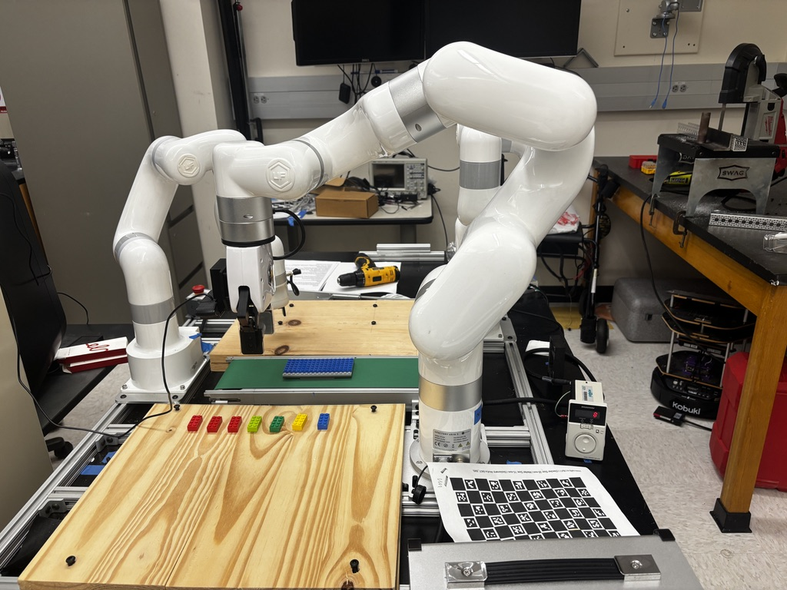
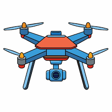
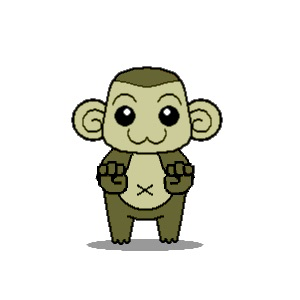
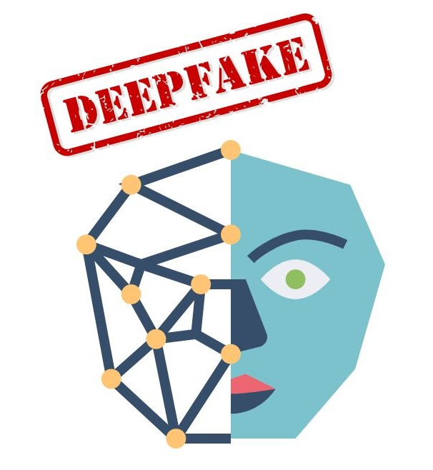

Senior Computer Scientist at UTRGV.
I build with
I am a Computer Science senior and Luminary Scholar at the University of Texas Rio Grande Valley, specializing in Computer Vision, Autonomous Systems, and Applied Machine Learning.
My work centers on the boundary between physical hardware and intelligent systems—from developing Natural Language driven target-tracking pipelines for autonomous UAVs in Gazebo and ROS to integrating 6 Degree of Freedom robotic manipulators with real-time vision models. I plan to pursue a Master's Degree in Computer Science to further bridge the gap between software and physical hardware.
Core Competencies
Python C++ PyTorch OpenCV ROS & Gazebo YOLO / YOLO-World Robotics (uFactorySDK) Socket / UDP StreamingMy professional and academic journey so far.
USDA REEU Program · University of Texas at San Antonio
Engineered an end-to-end autonomous crop sorting and packaging pipeline in partnership with the USDA, bridging real-time vision models with multi-axis industrial robotics.
Department of Computer Science · University of Texas Rio Grande Valley
Facilitating core computer science courses, currently supporting Automata & Formal Languages, with prior appointments in Software Engineering I and Computer Science I.
Society of Aerospace and Robotic Engineers (SARE) · UTRGV
Lead telemetry and avionics subteams developing hardware and software telemetry systems for advanced aerospace research initiatives.
Department of Computer Science · University of Texas Rio Grande Valley
Investigated theoretical models of algorithmic self-assembly, focusing on tile drainability and stochastic limits.
Projects that Work to Display Technical Skill within the Field.

An industrial sorting pipeline pairing YOLOv11 multi-class crop verification with a 6-DoF uFactory xArm 5 for automated pick, place, and packaging routines.

A project focused on developing a system that allows users to specify objects of interest using natural language, enabling autonomous UAVs to detect and track those objects effectively.

A Python-based Peer-to-Peer application that allows low-latency screen streaming and remote control of a server via a local network.

A video forensic tool using ResNet50 and LSTM models to detect facial manipulation in video streams with high accuracy.
A mobile application that utilizes Spotify's API to play randomized songs dependent on the users mood.
I'm currently looking for opportunities in Perception and Robotic Automation.
Email Me© 2026 Nathaniel DeLeon. All rights reserved.